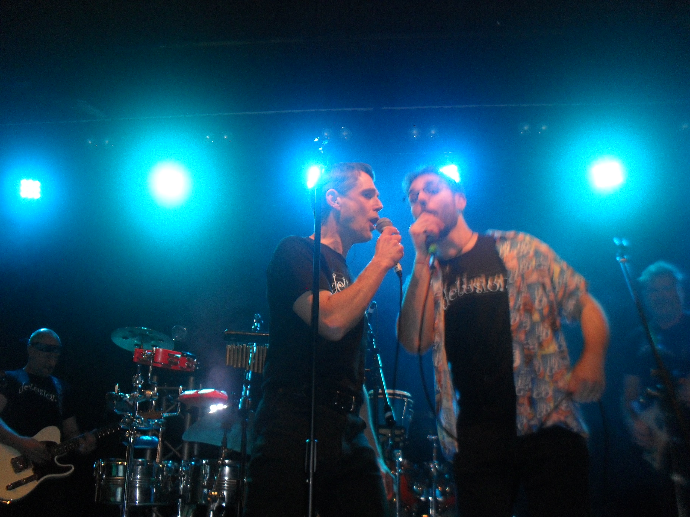

Rest of My Life
I've been working on this album for a few years now, and since I am concurrently doing a PhD you will have to wait a little longer! However, some of the songs are already released as singles, you can listen to them below!
Physics Lab Songs
Collaborating with lab coordinator Duncan Fisher at the University of Wollongong (and earlier with my high school physics teacher Mr. Woodley), I have written and recorded a series of songs to help students learn key physics concepts. These songs are used in labs preparation exercises to hopefully make it more engaging and memorable!
The Delusions
My Dad drums for @delusionsband, and I joined them (perhaps through nepotism) as vocalist! We are a big family cover band, and we often play at local venues in the Wollongong area, such as Towradgi Waves and the UOW Unibar.
